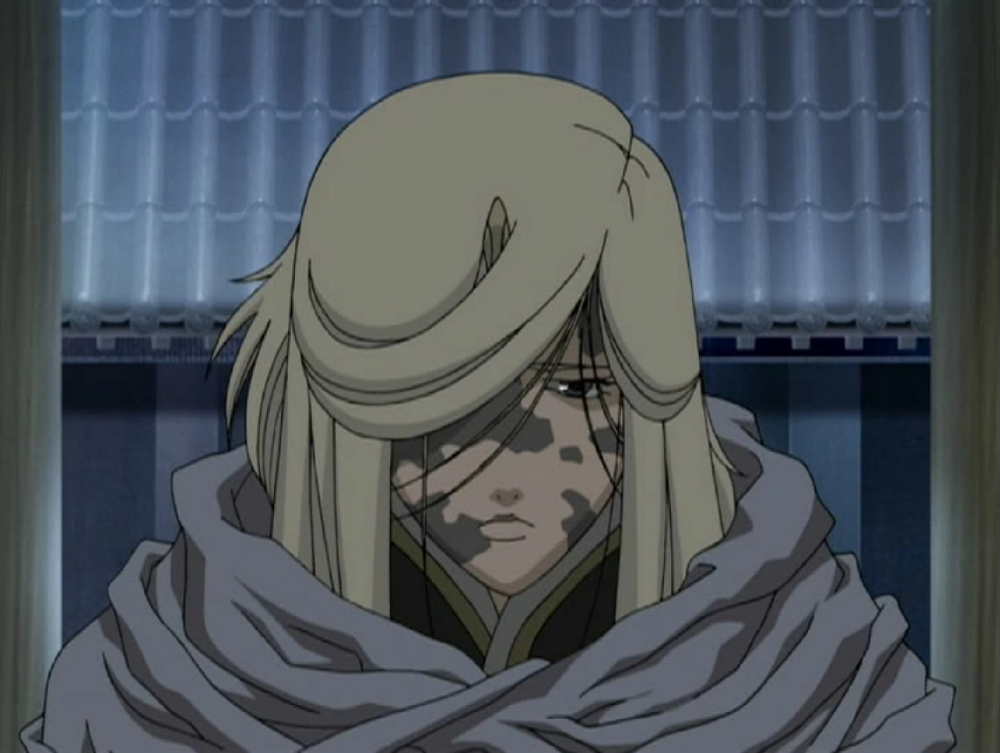
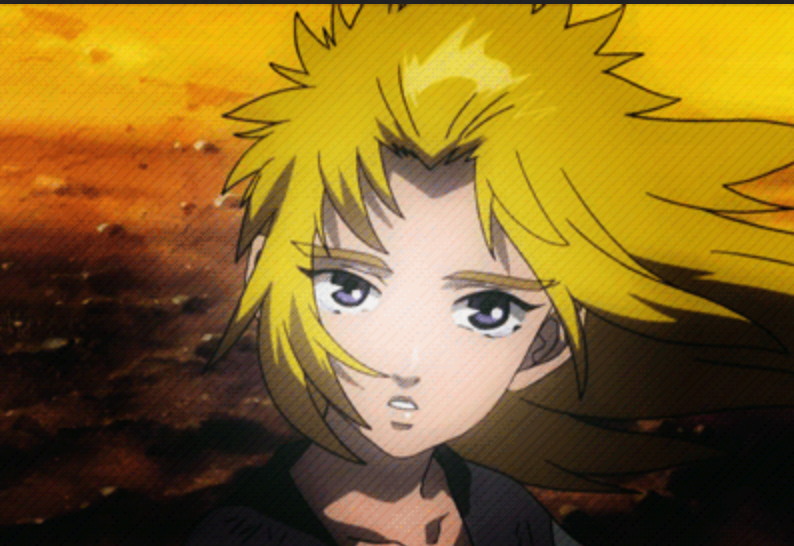

We are familiar with the western fantasy world, like Harry Potter, Game of Thrones. But do you know the eastern fantasy world? Maybe you are an anime fan and you are familiar with One Piece, Naruto. However, I guess you never watch, even didn’t hear this anime-the Twelve Kingdoms.
The work, the Twelve Kingdoms, originally is a series of fantasy novels written by Fuyumi Ono, then made into an anime in 2002.
The world of the Twelve Kingdoms is based on the coexistence of youma (monster), and sages. The political institution is similar to ancient China, especially Zhou dynasty.
There are twelve kingdoms, twelve kings and twelve kirins. Kirin possess the form of creature resembling a hybrid between a horse and a deer with a single horn from its forehead, somewhat like a unicorn. Kirin can shift into human form. Each kingdom has its own kirin.

Kirin
The king is selected by the kirin, rather than by blood or familial relationships, according to the will of Tentei, the Emperor of Heaven.

Kirin
In the world of The Twelve Kingdoms, the king has to follow three rules, or the king will die. First one is working hard to run the country. If the king does great job, he will be undead and ageless, like vampires. If the king becomes brutal, unmerciful, loses the way and fails to govern properly, the kirin will be sick, which is called Shitsudou. If the king keeps wrongheaded, the sickness of kirin gets worse with time and causes the kirin to die. If the kirin dies, the king will lose the mandate of heaven and eventually die within a year of the kirin's death. Typically, a king with a long and stable reign will have a prosperous and thriving kingdom, while short-lived monarchs tend to leave their kingdoms in a state of turmoil that wild youma appears, and weather becomes harsh.
Sicked Kirin
The second rule is that the king can’t escape his responsibility to be the king. If the king decides to reject the will of Tentei, he will quickly die.
The third rule is that the king from one country can’t interfere, or send an army into battle to other countries without consent. If the king intervenes or dispatches, the king and the kirin will quickly die (触犯侵略之罪<觌面之罪>).
In the Twelve Kingdoms, eight of the Twelve Kingdoms border at least one of these four seas, extending from the center like the petals of a flower. The kingdoms are surrounded by an endless sea called the Kyokai (虚海, Void Sea). At the center of the world are Five Sacred Mountains surround the Yellow Sea (the Kokai), a barren wasteland of rock, desert, swamp, and thorns where youma inhabit. The Five Sacred Mountains, which includes Mount Hou, is the mythic birthplace of kirin where all the kings of the Twelve Kingdoms must ascend in order to accept the mandate of heaven before they can claim their throne.
Before we begin the story of the Twelve Kingdoms, there is one last thing you need to know, Shoku. Shoku(蝕) are magical storms that connects the Twelve Kingdoms’ world to the lands of Hourai (Japan) and Kan (China). People might be transformed between these two worlds during Shoku. The storms naturally occur, but are extremely damaging to the world it impacts. Unless absolutely compelled, kirin and highly ranked sages shall not cross between the worlds in this way.
Above are basic settings for the world of the Twelve Kingdoms. As one of Fuyumi's big fans, I’d like to invite you to enjoy the unique world through data visualization.
Shadow of the Moon, a Shadow of Shadows
Youko, who used to be a normal high-schooler in Japan, met a strange tall man with golen yellow hair. He said "I'm Keiki, my lord." He asked her to consent or all people will die. After Youko agreed, she was suddenly attacked by a sea of youma and whisked her away to an unearthly realm. Youko is left with only a sword. This young girl had to quickly grow up to confront ample challenges. During the adventure, she gradually found she is not a normal person anymore.

The Cover of Book
There can be no doubt that the bubble of Youko is the biggest. She is the main character and this novel is talking about her adventure in the unknown world. Youko is regarded as a Kaikyaku after she went to the world of the Twelve Kingdoms. She was both hunted by the youma and the people in country Kou, because the king of Kou dislike Kaikyaku and Hanjyuu (a half-beast that has both a human and an animal form).

Youko is facing the youma.
And the second large bubble is Rakushun, Youko’s close friend. When Youko’s strength gave out and fell into a coma, Rakushun took her home, rather than reported her to the local ruler. Though Youko was initially distrustful of him, he patiently took care of Youko. He is very intelligent and knowledgeable, teaching Youko essential skills on how to live in the world. Youko went to the country En, where is peaceful and prosperous, to find a way back to Japan, accompanied by Rakushun. During the travel, they became close friends. In the chart, the line between them is also the thickest. The number is 117 that they appeared together in the novel.
Rakushun took care of Youko.
The third biggest bubble is the sword, Suiguutou. It’s a sword that can be wielded only by the rightful king of Kei. Its most dangerous ability is the power to present visions of past and future, and of places far-away to bewitch the wielder. Sword and scabbard sealed each other, so that the scabbard controlled the sword's visions and prevented people from drawing the sword, while the sword prevented the monkey spirit from getting loose. Youko loses the scabbard, and thus gets taunted by both visions and the monkey until she kills the monkey and picks up the dead scabbard.
Youko prepares to use the sword to kill the youma.
A Thousand Leagues of Wind, the Sky at Dawn
The book focuses on three girls: Youko, Suzu, and Shoukei, talking about the growth of these three girls and how they become great friends.
As the new king of Kei, Youko is surrounded by advisors who bicker among themselves and offer contradictory advice. Desperate to learn enough about her kingdom to rule wisely, Youko is sent by Keiki to study with a wise teacher named Enho. When Enho is abducted, Youko seeks to solve Enho, only to discover that the corruption in her kingdom runs much deeper than she ever imagined.
Suzu Oki, a Kaikyaku, used to serve the cruel mistress Lady Riyo, want to meet Youko because they are both Kaikyakus. So she went to Kei to meet Youko.
Shoukei became a poor, heavy manual worker after the death of her father, the king of Hou. She wanted to go back princess' life. When she heard Youko is a new, young empress, she thought it's a great chance. In this case, she went to Kei to meet Youko.
Even if they went to the province of Ei in Kei for different reasons, all of them fought for the same thing in the end.
The Cover of Book
Color of the Bubbles
Main Characters
Good Characters
Evil Characters
Both Good and Evil Characters
Not Live Animals
The bubble represents how many times this word appears in the novel.
The thickness of the line represents the times these two words appear together.
If you hover on them, detailed information will appear in the tooltip.
Background info
Riyou: a flying sage, she has been granted immortality, but does not participate in government affairs. Instead, she lives in the mountains and employs many servants. During the hundred years that Suzu serves her, Riyou is particularly abusive towards Suzu.

Riyou
Shoukou: the governor of the Shisui Prefecture in the Wa Province of Kei. His corruption is too great and the taxes he demands is 70%. He is called as “the wolf without a tail”. Luckily, some people, like Suzu, Koshou, came together to rebel against Shoukou. Youko also joined with the rebels when she discovers that Shoukou is responsible for abducting her mentor Enho.
Shoukou
Koshou: the charismatic leader of the Shisui rebels. A man with a strong sense of justice, he wants to make Wa Province a better place to live for the sake of his brother and all the people who are suffering under the corruption of Shoukou.
Koshou
Shitsudou: the situation when the king loses the way and fails to govern properly, at the same time kirin will be sick. If the king can’t realize his errors and mend his ways, kirin will get worse, even die. If the kirin dies, the king will die in one year after the kirin’s death.
Gekkei: the governor of Kei Province in Hou. He leads the rebellion against the king of Hou, becuase want to save people from the tyranny. After the rebellion, Gekkei refuses to lead the government as a temporary king. He retreats to the Kei Province to continue his duties as his governor.

Gekkei
Rakushun: Youko’s close friend. He is not only intelligent and knowledgeable, but also ingenuous and sweet.
Kantai: the general of the province of Baku. He is a hanjyuu that can take the form of a large bear, and he is incredibly strong, even in human form. He saves Shoukei after she threw a rock at Gahou's executioners.
Unlike the first novel, this one has three main characters. We can see the bubble of Suzu is the biggest, 634. The second bubble represents Shoukei, 553. The third biggest one is Youko, 464. Suzu and Shoukei wanted to see the king of Kei because they are similar-age gils, so we can see their bubbles are linked by "Imperial Kei" and "girl".
Suzu
At the beginning of the story, Suzu thought she was the most miserable person in the world, because she can’t talk with other people as a Kaikyaku, then was forced to endure a great deal of abuse from her lord, Riyou. From the chart, the number is 42 when Suzu and Riyou appeared together. She believed Youko can let her happy because Youko is Kaikyaku, too, and Youko is the powerful empress of country Kei. In this case, she left to see Youko.
She was changed by a young boy called Seishu on the way. Seishu lost his parents by youma’s attacks. He was also heavily injured by the attack. The injury gradually grows worse and is the source of seizures and his failing eyesight. Even his situation was so terrible, he always faced life with a smile. He pointed out Suzu made no actual effort to try to change those circumstances and only moped about how unfortunate she was. Suzu gradually recognized her mistake and they became friends.

Seishu and Suzu
However, Seishuu is deliberately run over by the carriage of the prefecture's praetor, Shoukou, for collapsing in the carriage's path. Suzu swore to avenge Seishuu by killing Shoukou and the king of Kei for her inaction. She was quickly recruited by the leader of the Shisui rebels, Koshou. From the chart, the number is 54 when Suzu and Koshou appeared together. They fought together to overthrow the rule of Shoukou.

Seishuu is run over by the carriage.
Shoukei
Shoukei used to be the princess of the Kingdom of Hou. Her father was killed due to Shitsudou. And she quickly became a poor, heavy manual worker, hated by Hou’s people. In the beginning, she deeply hated Gekkei, because Gekkei killed her parents. She thought Gekkei stole the throne, robbed her jewelry, beautiful clothes. She heard the new king of Kei is a girl of similar age with her. She was very jealous. She wanted to take advantage of Youko. In this case, she stole some jewelry to make her way to Kei.
Shoukei met Rakushun on the way. She felt mortifying and irritating when she found Rakushun knows more about Hou than her. Her father executed nearly 300,000 citizens in Hou for petty crimes and trivial problems in the final year of his reign. And she didn’t know about that. She recognized she just enjoyed the life of the princess, but not took the responsibility as a princess. It’s more shame than wearing in rags.

Shoukei feels shame.
After arriving Kei, Shoukei witnessed a man condemned to be crucified in the Wa Province. Reminded of her father's own brutality, she throws a rock at the executioners to stop them from killing the poor man. Then she was chased by guards until she was saved by Kantai. After that, Shoukei joined rebels revolting against Shoukou, the corrupt governor of Wa.
The Shore in Twilight, The Sky at Daybreak
Fifteen years before Youko's arrival in the Twelve Kingdoms, the kirin of Tai, Taiki's ranka had been blown over to Japan by a Shoku. He lived in Japan for 10 years and didn’t know himself is a kirin. Then he was returned to Mount Hou after being found by Enki. Taiki is cared for and educated in his role as the kirin of Tai. And Taiki successfully chose Gyousou to become king.

Taiki was very happy in Mount Hou.
However, there was a conspiracy waiting for them. Just after half a year, the kingdom of Tai falls, both the King of Tai and Taiki went missing. The number of youma gradually became more and more. The population was dramatically decreasing. In desperation, Risai, a general of Tai, manages to escape the kingdom and flees to Kei, where she beseeches the empress of Kei, Youko, to help find Taiki.

Risai
From the chart, we can clearly notice that the biggest bubble is “Risai”. Risai appeared 643 times in this novel. Because she fled to country Kei to beg Youko to find Taiki. When Youko agreed to her request, she fell into a coma due to terrible hurt. when she waked up, she lost her right arm due to serious injuries in exile. But she didn’t care. Risai was more worried about Taiki.

Youko is talking with Risai.
You can see the number of times between Risai and Taiki appear together. It is the thickest line in this novel with 67 times. Risai missed Taiki so much. The second thickest line is the relationship between Youko and Risai. Youko keeps telling the progress of finding Taiki to Risai. Risai is very grateful for Youko’s help.
Taiki is the second biggest bubble in the novel. 7 kings and kirins stood together to help the country Tai. They found out Taiki invoked meishoku, a special small Shoku, before Taiki’s missing. Meishoku happens when the kirin is under extreme stress or danger.

Taiki went back to Japan and lost his memory as a kirin after his horn cut.
In fact, Taiki’s horn was cut by Asen, the Tai's strongest military commanders, trusted by the king, Gyousou, as a brother. From the chart, we can find that the bubble representing Asen is linked with “Taiki”, “Gyousou”, “Risai” and “emperor”. Asen grievously betrayed the king, Gyousou, and usurped the throne.
Because Taiki’s horn was cut, and the horn is the source of kirin’s power. Taiki was so painful of losing his horn and created meishoku. And because Taiki was deep hurt, he lost the memory as a kirin, regarding himself as a normal boy in Japan.
After 7 kings and kirins deciding to help Tai, Rokuta, Keiki, Renrin went to Japan many times to find Taiki. Especially Renrin used the royal treasure of Ren, a bracelet called the gogoukanda to find Taiki. Because gogoukanda can open a portal to Japan without causing a Shoku, it is instrumental in bringing Taiki back the Twelve Kingdoms.
Taiki went to Ren with Renrin on a diplomatic visit 6 years ago.
At the end of this novel, Taiki was successfully brought back to the world of the Twelve Kingdoms. Taiki and Risai were very grateful to other kings and kirins. Even if Taiki lost his power, he still decided to go back to country Tai to find his lord, Gyousou, and save his country. It’s a duty as a kirin. Risai was worried that she can’t protect Taiki since she lost her right arm. But Taiki persuaded her and they bravely took to the roads leading to the home.
Color of the Bubbles
Main Characters
Good Characters
Evil Characters
Both Good and Evil Characters
Not Live Animals
The bubble represents how many times this word appears in the novel.
The thickness of the line represents the times these two words appear together.
If you hover on them, detailed information will appear in the tooltip.
Background info
Ranka: the enchanted fruit from the magic trees that all live are hatched from. Even people need to pray to Tentei, the Emperor of Heaven, for children through this kind of tree. If the ranka is blown from the tree before hatching by shoku into Japan, it will be implanted into the wombs of human mothers and born.

Human ranka is growing inside the fruit.
Shoku: magical storms that connects the Twelve Kingdoms’ world to the lands of Japan and China. People might be transformed between these two worlds during Shoku. The storms naturally occur, but are extremely damaging to the world it impacts.
Mount Hou: one of the Five Mountains on the eastern side of the Yellow Sea. It is the holy land containing the magic tree, from which kirin are hatched. The only residents on the mountain are the female sages, who raise and care for the kirin until it has chosen a king.
Enki: also called Rokuta, the kirin from country En. He is a taika as same as Taiki. He's worried about Taiki after Taiki's missing and went to Japan many times to find Taiki.
Gyousou: a famous general of Tai. After the death of the previous King of Tai, Gyousou ascended Mount Hou in hopes of becoming the new king. And he did it. He fast reformed after going back to Tai. However, he disappeared during quelling a riot.

Gyousou
Risai: Gyousou’s underlings, the few who successfully evaded capture and continued to search for Gyousou and Taiki after the coup. Risai fled to country Kei to request Youko to save country Tai.
Meishoku: a special small Shoku invoked by the kirin under extreme stress or danger.
Asen: the country Tai's strongest military commanders. Gyousou trusted him as a brother. But he grievously betrayed Gyousou, and usurped the throne. He didn’t want to greatly run the country. People live in misery under his rule.
Keiki: the kirin of country Kei. He taught something when Taiki was 10 years old. He is very happy with Tai’s return.

Keiki
Renrin: the Kirin of the kingdom of Ren. She looks like 18 years old, acting proper and refined. Both Renrin and her king like Taiki when Gyousou sends Taiki to Ren on a diplomatic visit 6 years ago.
The Wings of Dreams
Shushou, the youngest daughter of a wealthy merchant, had become frustrated by the state of her kingdom. Because of no new king since the death of the previous king 27 years ago, people had to live in danger. Youma has run rampant in country Kyou. She also asked her parents why not going to the Mount Hou for Shouzan. Her parents just laughed, ”Haha, we are just normal people, you are just a little child, you don’t know how dangerous Shouzan is”. She was not satisfied. “Now that those adults are not qualified to be the king of country Kyou, I will be the king to quell the youma, run the country.” She thought.
As a result, Shushou embarked on the journey of Shouzan.
The Cover of book
Color of the Bubbles
Main Characters
Good Characters
Evil Characters
Both Good and Evil Characters
Not Live Animals
The bubble represents how many times this word appears in the novel.
The thickness of the line represents the times these two words appear together.
If you hover on them, detailed information will appear in the tooltip.
Background info
Shouzan: the process for the pilgrimages taken by people ascending Mount Hou to be chosen by the kirin as the new king of their kingdom after the old king died. A person may only ascend Mt. Hou and attempt a shouzan once in their lifetime.
People are taking a Shouzan.
Hakuto: the name of Shushou’s moukyoku, a species of kijuu that resembled a white leopard. Intelligent, highly capable at reading human intentions, and yet gentle and attuned to its master, whom it already understood Shushou to be. It stretched out its neck and purred like a cat.
Keika: a servant in Shushou's household. Keika's mother was also a live-in maid and Keika herself has worked in Shushou's household since childhood. As such, she and Shushou maintain a relaxed and familiar relationship.
Mount Hou: one of the Five Mountains on the eastern side of the Yellow Sea. It is the holy land containing the magic tree, from which kirin are hatched. The only residents on the mountain are the female sages, who raise and care for the kirin until it has chosen a king.
The Yellow Sea: the sea located in the middle of the Twelve Kingdoms, with endless desert, endless forest and a vast swamp. The Yellow Sea is a vast expanse of land inhabited by all kinds of supernatural creatures, particularly rare youma.

The Yellow Sea
Rikou: a cheerful and perceptive man from Sou, the second son of king of Sou. He frequently travels around the Twelve Kingdoms, sporadically returning to Sou to provide news of what is occuring in other kingdoms to his father.
Kiwa: a rich man who ascends Mount Hou in hopes of becoming the new king of Kyou. He undertakes his pilgrimage at the same time as Shushou.
Kyouki: the kirin of the country Kyou. He is physically large and not slender, and the colour of his mane is described as being the colour of bright copper. Though kirin are known to be benevolent by nature, Kyouki is often criticized by Shushou for being overly sympathetic.

Kyouki
As the most important character in this novel, it’s no doubt that Shushou appeared the most times, which are 713 times. At the beginning of the novel, Shushou pretended to mindlessly spill her soup on her servant girl’s cloth. Then she exchanged her cloth with her maid, Keika. Because she knew it would be dangerous to dress up to the nines as a child after leaving home. Because the country Kyou was very chaotic since the old king died.

Shushou is riding Hakuto for Shouzan.
After taking the opportunity to leave home, Shushou pretended to be a footman, who is sending the moukyoku, Hakuto , to her lord. The road until closing to Mount Hou went off successfully. However, the Hakuto was stolen by a group of criminals. Shushou was angry and disappointed. But she didn’t give up. Instead, she was looking for a goushi before going to the Yellow Sea. Shushou knew the road will be very dangerous in the Yellow Sea, full of youma. But she had to pass through the Yellow Sea to Mount Hou. Many people died on the way of Shouzan. Luckily, Gankyuu appeared.
It’s obvious that Gankyuu is the second important character in the novel, appearing 522 times. The link between Shushou and him is also the thickest, with 150 times. They are always staying together in the novel.

Shushou was forcibly hired Gankyuu to be her goushi.
Gankyuu is a youma hunter. He is familiar with the dangers of the Yellow Sea surrounding Mount Hou. During his first meeting with Shushou, she forcibly hired him to be her goushi when she insists on Shouzan. Unable to persuade her otherwise, he reluctantly goes along with her, initially believing she will be intimidated into giving up upon reading the foot of the mountain because she had become entirely on the impulses of a child. Nevertheless, he was gradually changed by Shushou, and through she can be the new king of Kyou.
The small group was joint by Rikou, a young man from Sou, who befriended Shushou before she hired Gankyuu as her goushi and decides to come along to protect Shushou as well. We can see the links among Shushou, Gankyuu, and Rikou are very thick. They supported each other and fought against youma to go through the Yellow Sea.

Rikou
Compare with other competitors, like Kiwa, Shushou showed calm logic, clear wisdom. And she didn’t give up other people when the youma is tracing them. In fact, she put herself as bait and led those people to kill the youma. She came back several times when she was between death and life.

Shushou tried to escape from the youma's hands.
In contrast to our brave, wise girl Shushou, Kiwa showed a totally different picture. Kiwa appeared 116 times in the novel, showing up with Shushou 36 times. Though Kiwa seemed to be charitable and well-prepared at the start, he exposed increasingly foolish and self-serving throughout the journey. He brought an excessively large retinue of servants and material goods to ensure his comfort and as gifts for Kyouki. Even in the most dangerous situations, Kiwa refused to part with the caravan that he travels in. He eventually fled with his caravan, abandoning his retinue to the dangers of the Yellow Sea.
At the end of the novel, when Shushou arrived in Mount Hou, the kirin, Kyouki, walked up to her and knelt down, telling her “I could sense your Imperial spirit all the way from Mount Hou.” Gankyuu, Rikou and other people were very happy. To their surprise, the little girl biffed the big man across the top of his head.
“Then why didn’t you show up when I was born, you darned silly fool!”
After that, Shushou has ruled Kyou over 90 years.
Shushou is talking with Kyouki.
Poseidon of the East, Vast Blue Seas of the West
It’s a story took place over 500 years ago before Youko became the empress of Kei. The country En was gradually becoming more stable under Shouryuu’s rule, although it still has a long way to go before it's as beautiful and prosperous as it is in Youko's time, 500 years later.
Unfortunately, not everybody is happy with Shouryuu and his laid-back style of governance. Atsuyu, the self-proclaimed regent of the province of Gen in the kingdom of En, tried to seize power by having the kirin of En, Rokuta, kidnapped. He thought he can do better than Shouryuu.
When Rokuta was kidnapped, he was asked by his friend, Kouya, who was a loyal follower for Atsuyu, why Rokuta chose Shouryuu as the emperor of En. And Rokuta told him their story.

Rokuta
Dolore Amet Consequat
Aliquam massa urna, imperdiet sit amet mi non, bibendum euismod est. Curabitur mi justo, tincidunt vel eros ullamcorper, porta cursus justo. Cras vel neque eros. Vestibulum diam quam, mollis at consectetur non, malesuada quis augue. Morbi tincidunt pretium interdum. Morbi mattis elementum orci, nec dictum massa. Morbi eu faucibus massa. Aliquam massa urna, imperdiet sit amet mi non, bibendum euismod est. Curabitur mi justo, tincidunt vel eros ullamcorper, porta cursus justo. Cras vel neque eros. Vestibulum diam.
Vestibulum diam quam, mollis at consectetur non, malesuada quis augue. Morbi tincidunt pretium interdum. Morbi mattis elementum orci, nec dictum porta cursus justo. Quisque ultricies lorem in ligula condimentum, et egestas turpis sagittis. Cras ac nunc urna. Nullam eget lobortis purus. Phasellus vitae tortor non est placerat tristique. Sed id sem et massa ornare pellentesque. Maecenas pharetra porta accumsan.
In vestibulum massa quis arcu lobortis tempus. Nam pretium arcu in odio vulputate luctus. Suspendisse euismod lorem eget lacinia fringilla. Sed sed felis justo. Nunc sodales elit in laoreet aliquam. Nam gravida, nisl sit amet iaculis porttitor, risus nisi rutrum metus, non hendrerit ipsum arcu tristique est.
Dreaming of Paradise
We are familiar with western fantasy world, like Harry Potter, Game of Thrones. But do you know eastern fantasy world? Maybe you are a Japanese anime and you are familiar with One piece, Naruto. However, I guess you never watch, even didn’t heard this anime-the Twelve Kingdoms.
The work, the Twelve Kingdoms, originally is a series of fantasy novels wrote by Fuyumi Ono, then made into an anime in 2002. The author Fuyumi Ono created this fantasy world inspired by Chinese mythology, like Classic of Mountains and Seas, and ancient eastern organizational books, like Rites of Zhou. In addition, female characters under Fuyumi’s writing has enormous charm, who inspired me to firstly think about what kind of adult I want to be in the future.
As one of its’ big fans, I’d like to invite you to enjoy the unique world of the Twelve Kingdoms through data visualization.
Dolore Amet Consequat
Aliquam massa urna, imperdiet sit amet mi non, bibendum euismod est. Curabitur mi justo, tincidunt vel eros ullamcorper, porta cursus justo. Cras vel neque eros. Vestibulum diam quam, mollis at consectetur non, malesuada quis augue. Morbi tincidunt pretium interdum. Morbi mattis elementum orci, nec dictum massa. Morbi eu faucibus massa. Aliquam massa urna, imperdiet sit amet mi non, bibendum euismod est. Curabitur mi justo, tincidunt vel eros ullamcorper, porta cursus justo. Cras vel neque eros. Vestibulum diam.
Vestibulum diam quam, mollis at consectetur non, malesuada quis augue. Morbi tincidunt pretium interdum. Morbi mattis elementum orci, nec dictum porta cursus justo. Quisque ultricies lorem in ligula condimentum, et egestas turpis sagittis. Cras ac nunc urna. Nullam eget lobortis purus. Phasellus vitae tortor non est placerat tristique. Sed id sem et massa ornare pellentesque. Maecenas pharetra porta accumsan.
In vestibulum massa quis arcu lobortis tempus. Nam pretium arcu in odio vulputate luctus. Suspendisse euismod lorem eget lacinia fringilla. Sed sed felis justo. Nunc sodales elit in laoreet aliquam. Nam gravida, nisl sit amet iaculis porttitor, risus nisi rutrum metus, non hendrerit ipsum arcu tristique est.
Hisho's Birds
We are familiar with western fantasy world, like Harry Potter, Game of Thrones. But do you know eastern fantasy world? Maybe you are a Japanese anime and you are familiar with One piece, Naruto. However, I guess you never watch, even didn’t heard this anime-the Twelve Kingdoms.
The work, the Twelve Kingdoms, originally is a series of fantasy novels wrote by Fuyumi Ono, then made into an anime in 2002. The author Fuyumi Ono created this fantasy world inspired by Chinese mythology, like Classic of Mountains and Seas, and ancient eastern organizational books, like Rites of Zhou. In addition, female characters under Fuyumi’s writing has enormous charm, who inspired me to firstly think about what kind of adult I want to be in the future.
As one of its’ big fans, I’d like to invite you to enjoy the unique world of the Twelve Kingdoms through data visualization.
Dolore Amet Consequat
Aliquam massa urna, imperdiet sit amet mi non, bibendum euismod est. Curabitur mi justo, tincidunt vel eros ullamcorper, porta cursus justo. Cras vel neque eros. Vestibulum diam quam, mollis at consectetur non, malesuada quis augue. Morbi tincidunt pretium interdum. Morbi mattis elementum orci, nec dictum massa. Morbi eu faucibus massa. Aliquam massa urna, imperdiet sit amet mi non, bibendum euismod est. Curabitur mi justo, tincidunt vel eros ullamcorper, porta cursus justo. Cras vel neque eros. Vestibulum diam.
Vestibulum diam quam, mollis at consectetur non, malesuada quis augue. Morbi tincidunt pretium interdum. Morbi mattis elementum orci, nec dictum porta cursus justo. Quisque ultricies lorem in ligula condimentum, et egestas turpis sagittis. Cras ac nunc urna. Nullam eget lobortis purus. Phasellus vitae tortor non est placerat tristique. Sed id sem et massa ornare pellentesque. Maecenas pharetra porta accumsan.
In vestibulum massa quis arcu lobortis tempus. Nam pretium arcu in odio vulputate luctus. Suspendisse euismod lorem eget lacinia fringilla. Sed sed felis justo. Nunc sodales elit in laoreet aliquam. Nam gravida, nisl sit amet iaculis porttitor, risus nisi rutrum metus, non hendrerit ipsum arcu tristique est.
Book 1 to 7
We are familiar with western fantasy world, like Harry Potter, Game of Thrones. But do you know eastern fantasy world? Maybe you are a Japanese anime and you are familiar with One piece, Naruto. However, I guess you never watch, even didn’t heard this anime-the Twelve Kingdoms.
The work, the Twelve Kingdoms, originally is a series of fantasy novels wrote by Fuyumi Ono, then made into an anime in 2002. The author Fuyumi Ono created this fantasy world inspired by Chinese mythology, like Classic of Mountains and Seas, and ancient eastern organizational books, like Rites of Zhou. In addition, female characters under Fuyumi’s writing has enormous charm, who inspired me to firstly think about what kind of adult I want to be in the future.
As one of its’ big fans, I’d like to invite you to enjoy the unique world of the Twelve Kingdoms through data visualization.
Dolore Amet Consequat
Aliquam massa urna, imperdiet sit amet mi non, bibendum euismod est. Curabitur mi justo, tincidunt vel eros ullamcorper, porta cursus justo. Sed id sem et massa ornare pellentesque. Maecenas pharetra porta accumsan.
In vestibulum massa quis arcu lobortis tempus. Nam pretium arcu in odio vulputate luctus. Suspendisse euismod lorem eget lacinia fringilla. Sed sed felis justo. Nunc sodales elit in laoreet aliquam. Nam gravida, nisl sit amet iaculis porttitor, risus nisi rutrum metus, non hendrerit ipsum arcu tristique est.
Bullet screen comments from Bilibili
We are familiar with western fantasy world, like Harry Potter, Game of Thrones. But do you know eastern fantasy world? Maybe you are a Japanese anime and you are familiar with One piece, Naruto. However, I guess you never watch, even didn’t heard this anime-the Twelve Kingdoms.
The work, the Twelve Kingdoms, originally is a series of fantasy novels wrote by Fuyumi Ono, then made into an anime in 2002. The author Fuyumi Ono created this fantasy world inspired by Chinese mythology, like Classic of Mountains and Seas, and ancient eastern organizational books, like Rites of Zhou. In addition, female characters under Fuyumi’s writing has enormous charm, who inspired me to firstly think about what kind of adult I want to be in the future.
As one of its’ big fans, I’d like to invite you to enjoy the unique world of the Twelve Kingdoms through data visualization.
Dolore Amet Consequat
Aliquam massa urna, imperdiet sit amet mi non, bibendum euismod est. Curabitur mi justo, tincidunt vel eros ullamcorper, porta cursus justo. Sed id sem et massa ornare pellentesque. Maecenas pharetra porta accumsan.
In vestibulum massa quis arcu lobortis tempus. Nam pretium arcu in odio vulputate luctus. Suspendisse euismod lorem eget lacinia fringilla. Sed sed felis justo. Nunc sodales elit in laoreet aliquam. Nam gravida, nisl sit amet iaculis porttitor, risus nisi rutrum metus, non hendrerit ipsum arcu tristique est.
Bottom comments from Bilibili
We are familiar with western fantasy world, like Harry Potter, Game of Thrones. But do you know eastern fantasy world? Maybe you are a Japanese anime and you are familiar with One piece, Naruto. However, I guess you never watch, even didn’t heard this anime-the Twelve Kingdoms.
The work, the Twelve Kingdoms, originally is a series of fantasy novels wrote by Fuyumi Ono, then made into an anime in 2002. The author Fuyumi Ono created this fantasy world inspired by Chinese mythology, like Classic of Mountains and Seas, and ancient eastern organizational books, like Rites of Zhou. In addition, female characters under Fuyumi’s writing has enormous charm, who inspired me to firstly think about what kind of adult I want to be in the future.
As one of its’ big fans, I’d like to invite you to enjoy the unique world of the Twelve Kingdoms through data visualization.
Dolore Amet Consequat
Aliquam massa urna, imperdiet sit amet mi non, bibendum euismod est. Curabitur mi justo, tincidunt vel eros ullamcorper, porta cursus justo. Sed id sem et massa ornare pellentesque. Maecenas pharetra porta accumsan.
In vestibulum massa quis arcu lobortis tempus. Nam pretium arcu in odio vulputate luctus. Suspendisse euismod lorem eget lacinia fringilla. Sed sed felis justo. Nunc sodales elit in laoreet aliquam. Nam gravida, nisl sit amet iaculis porttitor, risus nisi rutrum metus, non hendrerit ipsum arcu tristique est.